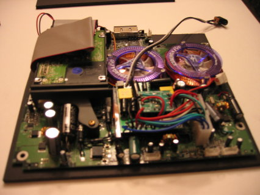

Previous Blog Entries:
From Drive.com.au: General Motors is reported to be planning a Pontiac rear-wheel-drive performance family using Holden�s key Commodore variants, writes JEZ SPINKS.
From Live Leak.com An experimental robotic exoskeleton turns grunts into super-soldiers.
Posted by "ghostavel" on xbox-scene.com forums 5th Aug 2007.
Great spin on the classic xbox.
Go to Top of Page
Videos from quad, hexcopters and helmets
2007
I have posted videos filmed from the YF680 hexcopter and TBS Discovery Pro using a GoPro. Enjoy...
SeanMac.Net - videos and photos served locally:
YouTube - Choose HD option from Settings Menu - Select 720p or 1080p:
Pontiac lines up Commodore ute and wagon.
Friday, November 23, 2007
Exoskeleton Turns Humans Into Terminators.
Friday, November 23, 2007
Xbox Mini
Tuesday, September 12, 2007

Internet Commenter Business Meeting
Tuesday, August 21, 2007
This is what happens when corporations change pwn3rship.
Taumatawhakatangihangakoauauotamateapokaiwhenuakitanatahu Hill
Tuesday, July 31, 2007
I'll see your long-ass place name and raise you a longer one.{kind=link}
Surface computing and multi-touch displays..
Tuesday, July 03, 2007
Shannons Car Show
Saturday, June 02, 2007
Shannon's second car show in Darwin after a successful run last year is back bigger and better than ever.{kind=link}
{kind=link}
{kind=link}
{kind=link}
{kind=link}
My baby and me at Litchfield Park
Saturday, January 27, 2007
Litchfield is an great place to spend the day floating around and relaxing.{kind=link}
{kind=link}
{kind=link}
{kind=link}
James's Mazda RX7
Thursday, January 26, 2007
James has a new toy... This RX7 is in amazing nic considering it is a '93 FD model. There will be some modifications to it over the next while: Single turbo conversion, front mounted intercooler, new clutch. Eventually there will be a new body kit, comprising gilled CF bonnet and 18" wheels.Go to Top of Page